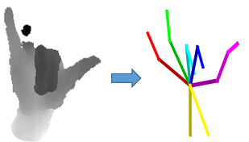
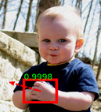

Selected Publications
Dachuan Cheng, Jian Shi, Yanyun Chen, Xiaoming Deng, Xiaopeng Zhang. Learning Scene Illumination by Pairwise Photos from Rear and Front Mobile Cameras . Computer Graphics Forum (2018) |
|
Yikun Wang, Liang Chang, Yuhua Cheng, Lihua Jin, Zhengxin Cheng, Xiaoming Deng, Fuqing Duan. Text2Sketch: Learning Face Sketch from Facial Attribute Text . ICIP 2018. |
|
|  | Xiaoming Deng, Shuo Yang, Yinda Zhang, Ping Tan, Liang Chang, Hongan Wang. Hand3D: Hand Pose Estimation using 3D Neural Network . arXiv:1704.02224 [cs.CV] (7 Apr 2017) |
|  | Xiaoming Deng, Yinda Zhang, Shuo Yang, Ping Tan, Liang Chang, Ye Yuan, Hongan Wang. Joint Hand Detection and Rotation Estimation Using CNN. IEEE Transactions on Image Processing, 27(4):1888-1900 (2018) |
Liang Chang, Xiaoming Deng, Mingquan Zhou, Zhongke Wu, Ye Yuan, Shuo Yang, Hongan Wang. Convolutional Neural Networks in Image Understanding. Acta Automatica Sinica (2016) |
|
Liang Chang, Yves Rozenholc, Xiaoming Deng, Fuqing Duan, Mingquan Zhou. Face Sketch Synthesis Using Non-local Means and Patch-based Seaming. ICIP 2015. |
|
Xiaoming Deng, Jie Liu, Feng Tian, Liang Chang, Hongan Wang. Motion Estimation of Multiple Depth Cameras Using Spheres. (slides) ICIP 2014. |
|
Xiaoming Deng, Shihong Xia, Wenzhong Wang, Zhaoqi Wang, Liang Chang, Hongan Wang. Automatic Gait Motion Capture with Missing-marker Fillings. (video, slides, press release) ICPR 2014. |
|
Zhenglong Zhou, Bo Shu, Shaojie Zhuo, Xiaoming Deng, Ping Tan, Stephen Lin. Image-based Clothes Animation for Virtual Fitting. (project page, video demo, ACM version) SIGGRAPH Asia 2012 Technique Briefs. |
|
Xiaoming Deng, Fuchao Wu, Yihong Wu, Fuqing Duan, Liang Chang, Hongan Wang. Self-calibration of Hybrid Central Catadioptric and Perspective Cameras. Computer Vision and Image Understanding 116(6): 715-729 (2012) |
|
Fuqing Duan, Fuchao Wu, Mingquan Zhou, Xiaoming Deng, Yun Tian. Calibrating Effective Focal Length for Central Catadioptric Cameras using One Space Line. Pattern Recognition Letters 33(5): 646-653 (2012) |
|
Liang Chang, Xiaoming Deng, Mingquan Zhou, Fuqing Duan, Zhongke Wu: Smoothness-constrained Face Photo-sketch Synthesis using Sparse Representation. ICPR 2012: 3025-3029 |
|
Xiaoming Deng, Fuchao Wu, Yihong Wu, Liang Chang, Wei Liu, Hongan Wang: Calibration of Central Catadioptric Camera with One-dimensional Object undertaking General Motions. ICIP 2011: 637-640 |
|
Liang Chang, Mingquan Zhou, Yanjun Han, Xiaoming Deng. Face Sketch Synthesis via Sparse Representation. ICPR 2010: 2146-2149 |
|
Wenzhong Wang, Xiaoming Deng, Xianjie Qiu, Shihong Xia, Zhaoqi Wang. Learning Local Models for 2D Human Motion Tracking. ICIP 2009: 2589-2592 |
|
Hui Zeng, Xiaoming Deng, Zhanyi Hu. A New Normalized Method on Line-based Homography Estimation. Pattern Recognition Letters 29(9): 1236-1244 (2008) |
|
Xiaoming Deng, Fuchao Wu, Yihong Wu, Fuqing Duan. Visual Metrology with Uncalibrated Radial Distorted Images. ICPR 2008. |
|
Liang Chang, Xiaoming Deng, Suiwu Zheng, Yongqing Wang. Scaling Up Kernel Grower Clustering Method for Large Data Sets via Core-sets, Acta Automatica Sinica 34 (3): 376-382(2008) |
|
Xiaoming Deng, Fuchao Wu, Yihong Wu. An Easy Calibration Method for Central Catadioptric Cameras, Acta Automatica Sinica (2007) |
(This web page last updated on April 2017.)